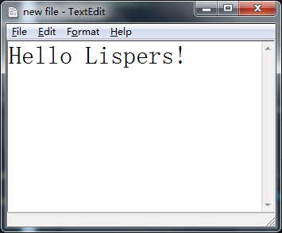
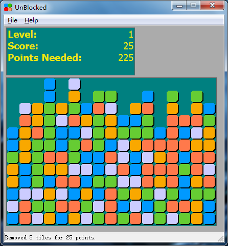

README
Table of Contents
1 Graphic-Forms 0.9.0
Copyright (c) 2006-2007, Jack D. Unrue
Copyright (c) 2016, Bo Yao
Graphic-Forms is a user interface library implemented in Common Lisp focusing on the Windows(R) platform. Graphic-Forms is licensed under the terms of the BSD License.
This is a fork of original Graphic-Forms in common-lisp.net by Mr. Jack D. Unrue. Thanks to his great work, Graphic-Forms is a comprehensive Windows GUI toolkit, with through tests, useful docs and demos. Unfortunately, it's not maintained for a while and can't live well with new version of its Lisp Dependencies. This fork does some fixes to make Graphic-Forms work under new verison of Windows and can be loaded through QuickLisp. A small amount of bug fix is also done but new functional improvement will be made in future version. All demos, unit tests and examples work correctly now, Graphic-Forms is now good for Windows GUI programming again.
1.1 Quickstart
Download or clone the project and put it tnto QuickLisp's local project directory and evaluate: (ql:quickload :graphic-forms). You can then view demos by:
;; a simple text editor (gft:textedit) ;; a block elimnating game (gft:unblocked)
To make further configuration about plugins, see the 1.3 section. To view other examples please see src/tests/uitoolkit/README.txt for details.
1.2 Screenshots
Here are the screenshots for the two demos on Windows 7:
- TextEdit:

- UnBlocked:

1.3 Detailed Instructions on Installation
- [OPTIONAL] Install ImageMagick 6.2.6.5-Q16 (note in particular that it is the Q16 version that is needed, not the Q8 version). The default installation directory is "c:/Program Files/ImageMagick-6.2.6-Q16/".
- Download or clone the project and put Graphic-Forms to a QuickLisp local project directory (Hopefully it will be add to QuickLisp's Package Index next month.
- Execute the following forms at your REPL:
(ql:quickload :graphic-forms)
- If you want more image type support with ImageMagick, Execute the following forms at your REPL
(push :load-imagemagick-plugin *features*) (setf cl-user::*magick-library-directory* "c:/path/to/ImageMagick/")
- Execute the following forms at your REPL:
(ql:quickload :graphic-forms)~
- Proceed to the next section to run the tests, or start coding!
1.4 How To Run Tests And Demos
- Load the graphic-forms system as described in the previous section
- Execute the following forms from your REPL:
;; execute demos and test programs (gft:hello-world) (gft:unblocked) (gft:textedit) ;; see src/tests/uitoolkit/README.txt for details on other test programs ;; execute the unit-tests (in-package :gft) (run-tests)
1.5 Dependencies
Graphic-Forms requires the following libraries. When load Graphic-Forms, all of them can be loaded automatically via QuickLisp.
- ASDF
- CFFI
- Closer to MOP
- lw-compat
- Macro Utilities in Practical Common Lisp
- binary-data in Practical Common Lisp
To run tests, you need:
The following libraries are optional:
1.6 Supported Common Lisp Implementations
Graphic-Forms currently supports SBCL 1.3.9, CCL 1.11 on Windows 7 x86. Older version of SBCL, CCL, CLisp with x64 version of Windows 7 and other Windows versions should also work, but not tested yet. Tests on other implementations and different version of Windows are welcomed. Original Graphic-Forms has Allegro CL and Lispworks support, but I am not able to test on commercial platforms.
1.7 Known Problems
Aside from the fact that there are a myriad of classes, functions, and features in general that are not yet implemented, this section lists known problems in this release:
- The following bug filed against CLISP 2.38
http://sourceforge.net/tracker/index.php?func=detail&aid=1463994&group_id=1355&atid=101355
may result in a GPF if a window's layout manager is changed. Compared to prior releases of Graphic-Forms, there is much less chance of this problem affecting layout management.
- Please be advised that SBCL is itself still in the early stages of supporting Windows, and as a consequence, you may experience problems such as 'GC invariant lost' errors that result in a crash to LDB.
- The 'unblocked' and 'textedit' demo programs are not yet complete.
- The gfg:text-extent method currently does not return the correct text height value. As a workaround, get the text metrics for the font and compute height from that. The gfg:text-extent function does return the correct width.
- If a Graphic-Forms application is launched from within SLIME with CLISP or SBCL as the backend (both of which are single-threaded on Win32), further SLIME commands will be 'pipelined' until the Graphic-Forms main message loop exits. If/when these implementations gain multi-threading support on Win32, then the Graphic-Forms library code will be updated to launch a separate thread, as is currently done for Allegro and LispWorks.
1.8 Feedback and Bug Reports
Graphic-Forms project is currently hosted on common-lisp.net, please provide feedback via the following channels:
The issue tracking system: https://gitlab.common-lisp.net/byao/Graphic-Forms/issues
If you want to contribute, feel free to send a pull request: https://gitlab.common-lisp.net/byao/Graphic-Forms/merge_requests
[the end]